<!DOCTYPE html>
<html>
<head><meta name="generator" content="Hexo 3.9.0">
  <meta charset="utf-8">
  
  <title>Jenkins使用 | 记事本</title>
  <meta name="viewport" content="width=device-width, initial-scale=1, maximum-scale=1">
  
  <meta name="description" content="Jenkins安装 启动Jenkins123456789101112131415version: &apos;3&apos;services:  jenkins:    container_name: jenkins    image: jenkinsci/blueocean    # 指定docker用户    user: root    ports:      - 8090:8080    volumes:">
<meta name="keywords" content="持续集成,持续部署">
<meta property="og:type" content="article">
<meta property="og:title" content="Jenkins使用">
<meta property="og:url" content="https://xulovemin.github.io/2020/11/29/Jenkins使用/index.html">
<meta property="og:site_name" content="记事本">
<meta property="og:description" content="Jenkins安装 启动Jenkins123456789101112131415version: &apos;3&apos;services:  jenkins:    container_name: jenkins    image: jenkinsci/blueocean    # 指定docker用户    user: root    ports:      - 8090:8080    volumes:">
<meta property="og:locale" content="zh-CN">
<meta property="og:image" content="https://xulovemin.github.io/2020/11/29/Jenkins使用/webhook.jpg">
<meta property="og:image" content="https://xulovemin.github.io/2020/11/29/Jenkins使用/sshserver.jpg">
<meta property="og:image" content="https://xulovemin.github.io/2020/11/29/Jenkins使用/jdk.jpg">
<meta property="og:image" content="https://xulovemin.github.io/2020/11/29/Jenkins使用/docker.jpg">
<meta property="og:image" content="https://xulovemin.github.io/2020/11/29/Jenkins使用/pingju.jpg">
<meta property="og:image" content="https://xulovemin.github.io/2020/11/29/Jenkins使用/git.jpg">
<meta property="og:image" content="https://xulovemin.github.io/2020/11/29/Jenkins使用/maven.jpg">
<meta property="og:image" content="https://xulovemin.github.io/2020/11/29/Jenkins使用/sshrun.jpg">
<meta property="og:image" content="https://xulovemin.github.io/2020/11/29/Jenkins使用/blue.jpg">
<meta property="og:image" content="https://xulovemin.github.io/2020/11/29/Jenkins使用/role1.jpg">
<meta property="og:image" content="https://xulovemin.github.io/2020/11/29/Jenkins使用/role2.jpg">
<meta property="og:image" content="https://xulovemin.github.io/2020/11/29/Jenkins使用/role3.jpg">
<meta property="og:updated_time" content="2021-03-19T01:48:58.650Z">
<meta name="twitter:card" content="summary">
<meta name="twitter:title" content="Jenkins使用">
<meta name="twitter:description" content="Jenkins安装 启动Jenkins123456789101112131415version: &apos;3&apos;services:  jenkins:    container_name: jenkins    image: jenkinsci/blueocean    # 指定docker用户    user: root    ports:      - 8090:8080    volumes:">
<meta name="twitter:image" content="https://xulovemin.github.io/2020/11/29/Jenkins使用/webhook.jpg">
  
  
    <link rel="icon" href="/favicon.ico">
  
  <link href="//cdn.bootcss.com/font-awesome/4.7.0/css/font-awesome.min.css" rel="stylesheet" type="text/css">
  <link rel="stylesheet" href="/css/style.css">
  <script src="/js/pace.min.js"></script>
  

  
  

</head>
</html>
<body>
  <div id="container">
      <header id="header">
    <div id="banner"></div>
    <div id="header-outer">
        <div id="header-menu" class="header-menu-pos animated">
            <div class="header-menu-container">
                <a href="/" class="left">
                    <span class="site-title">艾泽拉斯</span>
                </a>
                <nav id="header-menu-nav" class="right">
                    
                    <a  href="/">
                        <i class="fa fa-home"></i>
                        <span>主页</span>
                    </a>
                    
                    <a  href="/archives">
                        <i class="fa fa-archive"></i>
                        <span>归档</span>
                    </a>
                    
                    <a  href="/about">
                        <i class="fa fa-user"></i>
                        <span>关于</span>
                    </a>
                    
                </nav>
                <a class="mobile-header-menu-button">
                    <i class="fa fa-bars"></i>
                </a>
            </div>
        </div>
        <div id="header-row">
            <div id="logo">
                <a href="/">
                    
                </a>
            </div>
            <div class="header-info">
                <div id="header-title">
                    
                    <h2>
                        艾泽拉斯
                    </h2>
                    
                </div>
                <div id="header-description">
                    
                    <h3>
                        加尔鲁什·地狱咆哮
                    </h3>
                    
                </div>
            </div>
            <nav class="header-nav">
                <div class="social">
                    
                </div>
            </nav>
        </div>
    </div>
</header>
      <div class="outer">
        <section id="main" class="body-wrap"><article id="post-Jenkins使用" class="article article-type-post" itemscope itemprop="blogPost">
  <div class="article-inner">
    
      <header class="article-header">
        
  
    <h1 class="post-title" itemprop="name">
      Jenkins使用
    </h1>
    <div class="post-title-bar">
      <ul>
          
              <li>
                  <i class="fa fa-book"></i>
                  
                      <a href="/categories/DevOps/">DevOps</a>
                  
              </li>
          
        <li>
          <i class="fa fa-calendar"></i>  2020-11-29
        </li>
        <li>
          <i class="fa fa-eye"></i>
          <span id="busuanzi_value_page_pv"></span>
        </li>
      </ul>
    </div>
  

          
      </header>
    
    <div class="article-entry post-content" itemprop="articleBody">
      
            
            <h3 id="Jenkins安装"><a href="#Jenkins安装" class="headerlink" title="Jenkins安装"></a>Jenkins安装</h3><ul>
<li>启动Jenkins<figure class="highlight cmd"><table><tr><td class="gutter"><pre><span class="line">1</span><br><span class="line">2</span><br><span class="line">3</span><br><span class="line">4</span><br><span class="line">5</span><br><span class="line">6</span><br><span class="line">7</span><br><span class="line">8</span><br><span class="line">9</span><br><span class="line">10</span><br><span class="line">11</span><br><span class="line">12</span><br><span class="line">13</span><br><span class="line">14</span><br><span class="line">15</span><br></pre></td><td class="code"><pre><span class="line"><span class="function">version: '3'</span></span><br><span class="line"><span class="function"><span class="title">services</span>:</span></span><br><span class="line"><span class="function">  <span class="title">jenkins</span>:</span></span><br><span class="line"><span class="function">    <span class="title">container_name</span>: <span class="title">jenkins</span></span></span><br><span class="line"><span class="function">    <span class="title">image</span>: <span class="title">jenkinsci</span>/<span class="title">blueocean</span></span></span><br><span class="line"><span class="function">    # 指定<span class="title">docker</span>用户</span></span><br><span class="line"><span class="function">    <span class="title">user</span>: <span class="title">root</span></span></span><br><span class="line"><span class="function">    <span class="title">ports</span>:</span></span><br><span class="line"><span class="function">      - 8090:8080</span></span><br><span class="line"><span class="function">    <span class="title">volumes</span>:</span></span><br><span class="line"><span class="function">      - /<span class="title">data</span>/<span class="title">jenkins</span>:/<span class="title">var</span>/<span class="title">jenkins_home</span></span></span><br><span class="line"><span class="function">      # 这个很重要，可以让<span class="title">Jenkins</span>容器里面使用<span class="title">docker</span></span></span><br><span class="line"><span class="function">      - /<span class="title">var</span>/<span class="title">run</span>/<span class="title">docker.sock</span>:/<span class="title">var</span>/<span class="title">run</span>/<span class="title">docker.sock</span> </span></span><br><span class="line"><span class="function">      # 以让<span class="title">Jenkins</span>容器里面使用<span class="title">docker</span>-<span class="title">compose</span></span></span><br><span class="line"><span class="function">      - /<span class="title">usr</span>/<span class="title">local</span>/<span class="title">bin</span>/<span class="title">docker</span>-<span class="title">compose</span>:/<span class="title">usr</span>/<span class="title">local</span>/<span class="title">bin</span>/<span class="title">docker</span>-<span class="title">compose</span></span></span><br></pre></td></tr></table></figure>
</li>
</ul>
<h3 id="jenkins系统管理配置"><a href="#jenkins系统管理配置" class="headerlink" title="jenkins系统管理配置"></a>jenkins系统管理配置</h3><ul>
<li>webhook配置（github或者gitlab）</li>
</ul>
<p>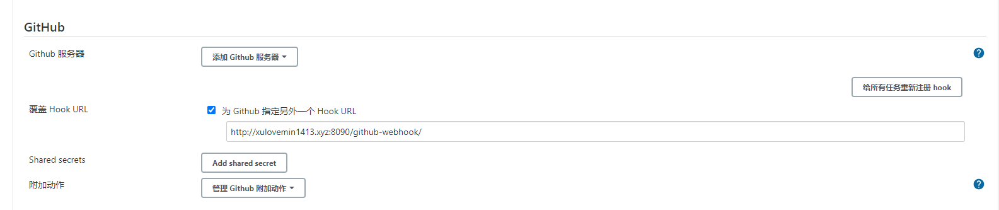</p>
<ul>
<li>sshserver配置(需要下载插件Publish Over SSH)</li>
</ul>
<p>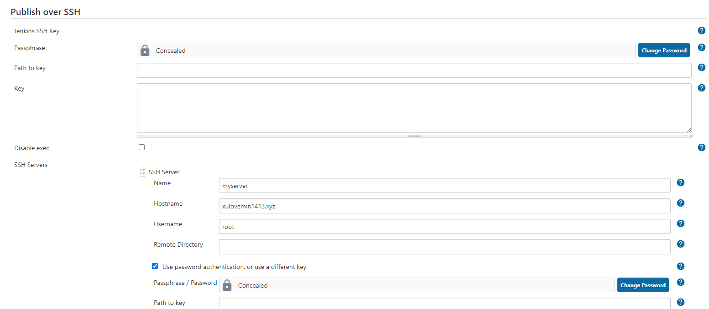</p>
<h3 id="jenkins全局工具配置"><a href="#jenkins全局工具配置" class="headerlink" title="jenkins全局工具配置"></a>jenkins全局工具配置</h3><ul>
<li>jdk与git（系统默认就带、使用默认配置即可）</li>
</ul>
<p>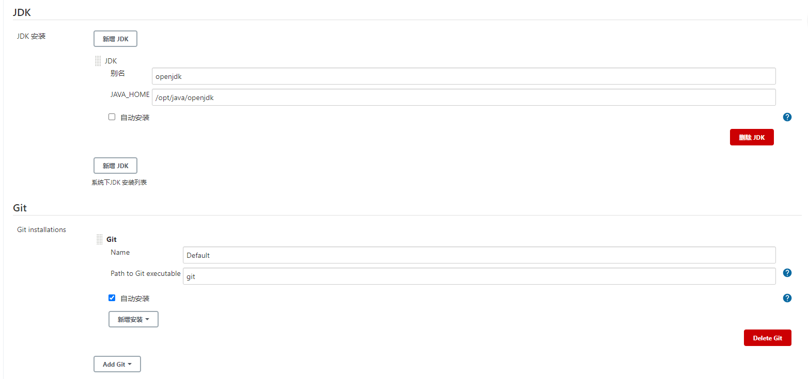</p>
<ul>
<li>docker与maven（确定之后不会立即下载，会在jenkins流程需要的时候下载）</li>
<li>docker需要下载（CloudBees Docker Build and Publish plugin）这个插件</li>
<li>maven需要下载（Maven Integration plugin）这个插件</li>
</ul>
<p>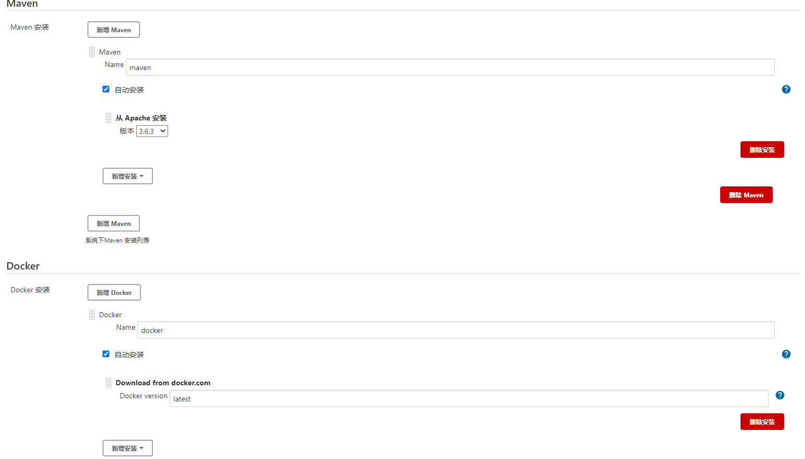</p>
<h3 id="jenkins全局凭据管理"><a href="#jenkins全局凭据管理" class="headerlink" title="jenkins全局凭据管理"></a>jenkins全局凭据管理</h3><ul>
<li>保存git、harbor等用户名密码</li>
</ul>
<p>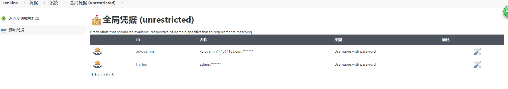</p>
<h3 id="新建jenkins任务"><a href="#新建jenkins任务" class="headerlink" title="新建jenkins任务"></a>新建jenkins任务</h3><ul>
<li>老版本构建、通过界面配置方式</li>
<li>新建项目（构建一个maven项目）</li>
<li>源码管理（配置git或者gitlab）</li>
</ul>
<p>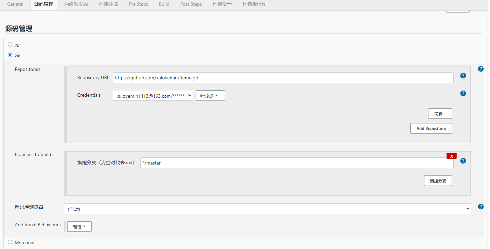</p>
<ul>
<li>构建触发器（使用git或者gitlab的webhook自动触发）</li>
<li>maven编译以及push到harbor</li>
</ul>
<p>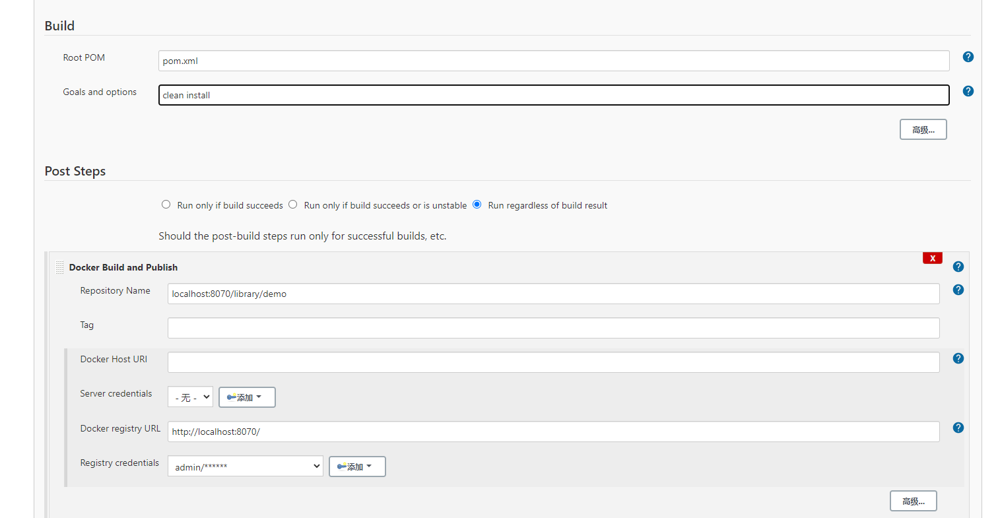</p>
<ul>
<li>ssh远程主机运行docker容器</li>
</ul>
<p>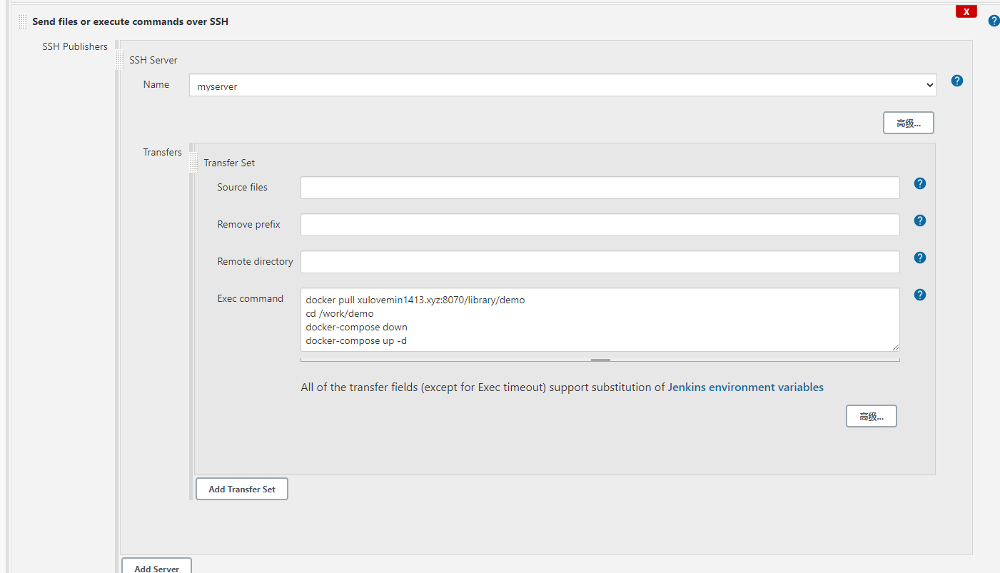</p>
<h3 id="以piplines的方式构建任务"><a href="#以piplines的方式构建任务" class="headerlink" title="以piplines的方式构建任务"></a>以piplines的方式构建任务</h3><ul>
<li>主要是以groovy代码的方式构建</li>
<li>可以有逻辑判断等</li>
<li>能调用Blue Ocean查看完整构建状态</li>
<li>可以用git存储流程代码，方便</li>
<li>前面配置一样，流程在下面的代码里面</li>
</ul>
<figure class="highlight cmd"><table><tr><td class="gutter"><pre><span class="line">1</span><br><span class="line">2</span><br><span class="line">3</span><br><span class="line">4</span><br><span class="line">5</span><br><span class="line">6</span><br><span class="line">7</span><br><span class="line">8</span><br><span class="line">9</span><br><span class="line">10</span><br><span class="line">11</span><br><span class="line">12</span><br><span class="line">13</span><br><span class="line">14</span><br><span class="line">15</span><br><span class="line">16</span><br><span class="line">17</span><br><span class="line">18</span><br><span class="line">19</span><br><span class="line">20</span><br><span class="line">21</span><br><span class="line">22</span><br><span class="line">23</span><br><span class="line">24</span><br><span class="line">25</span><br><span class="line">26</span><br><span class="line">27</span><br><span class="line">28</span><br><span class="line">29</span><br><span class="line">30</span><br><span class="line">31</span><br><span class="line">32</span><br><span class="line">33</span><br><span class="line">34</span><br><span class="line">35</span><br><span class="line">36</span><br><span class="line">37</span><br><span class="line">38</span><br><span class="line">39</span><br><span class="line">40</span><br><span class="line">41</span><br><span class="line">42</span><br><span class="line">43</span><br><span class="line">44</span><br><span class="line">45</span><br><span class="line">46</span><br><span class="line">47</span><br><span class="line">48</span><br><span class="line">49</span><br><span class="line">50</span><br><span class="line">51</span><br></pre></td><td class="code"><pre><span class="line">pipeline &#123;</span><br><span class="line">    # 指定机器运行，可选any、<span class="built_in">label</span>、docker等</span><br><span class="line">    agent &#123;</span><br><span class="line">        <span class="built_in">label</span> 'master'</span><br><span class="line">    &#125;</span><br><span class="line">    stages &#123;</span><br><span class="line">        # 拉取git代码，根据分支不同建立不同的任务，到时候各自分支提交会自动出发相应的构建流程</span><br><span class="line">        stage('Git Pullling') &#123;</span><br><span class="line">            steps &#123;</span><br><span class="line">                git branch: 'develop', credentialsId: 'xulovemin', url: 'https://github.com/xulovemin/demo.git'</span><br><span class="line">            &#125;</span><br><span class="line">        &#125;</span><br><span class="line">        stage('Maven Build') &#123;</span><br><span class="line">            # 使用系统设置中安装的工具</span><br><span class="line">            tools &#123;</span><br><span class="line">                maven 'maven'</span><br><span class="line">            &#125;</span><br><span class="line">            steps &#123;</span><br><span class="line">                sh 'mvn clean package -Dmaven.test.skip'</span><br><span class="line">            &#125;</span><br><span class="line">        &#125;</span><br><span class="line">        stage('Docker Build') &#123;</span><br><span class="line">            # 系统运行起来自动带docker环境</span><br><span class="line">            steps &#123;</span><br><span class="line">                sh 'docker build -t localhost:<span class="number">8070</span>/library/demo .'</span><br><span class="line">                sh 'docker push localhost:<span class="number">8070</span>/library/demo'</span><br><span class="line">            &#125;</span><br><span class="line">        &#125;</span><br><span class="line">        stage('Deployment') &#123;</span><br><span class="line">            # 远程ssh服务器，需要下载SSH Pipeline Steps这个插件</span><br><span class="line">            # 不同的构建环境ssh不同的主机</span><br><span class="line">            steps &#123;</span><br><span class="line">                script &#123;</span><br><span class="line">                    def remote = [:]</span><br><span class="line">                    remote.name = 'server'</span><br><span class="line">                    remote.host = 'xulovemin1413.xyz'</span><br><span class="line">                    remote.user = 'root'</span><br><span class="line">                    remote.password = 'Lixu1989'</span><br><span class="line">                    remote.port = <span class="number">22</span></span><br><span class="line">                    remote.allowAnyHosts = true</span><br><span class="line">                    sshCommand remote: remote, command: """</span><br><span class="line">                    docker pull xulovemin1413.xyz:<span class="number">8070</span>/library/demo</span><br><span class="line">                    <span class="built_in">cd</span> /work/demo</span><br><span class="line">                    docker-compose down</span><br><span class="line">                    docker-compose up -d</span><br><span class="line">                    """</span><br><span class="line">                &#125;</span><br><span class="line">            &#125;</span><br><span class="line">        &#125;</span><br><span class="line">    &#125;</span><br><span class="line">&#125;</span><br></pre></td></tr></table></figure>
<ul>
<li>自动部署Vue流程</li>
</ul>
<figure class="highlight cmd"><table><tr><td class="gutter"><pre><span class="line">1</span><br><span class="line">2</span><br><span class="line">3</span><br><span class="line">4</span><br><span class="line">5</span><br><span class="line">6</span><br><span class="line">7</span><br><span class="line">8</span><br><span class="line">9</span><br><span class="line">10</span><br><span class="line">11</span><br><span class="line">12</span><br><span class="line">13</span><br><span class="line">14</span><br><span class="line">15</span><br><span class="line">16</span><br><span class="line">17</span><br><span class="line">18</span><br><span class="line">19</span><br><span class="line">20</span><br><span class="line">21</span><br><span class="line">22</span><br><span class="line">23</span><br><span class="line">24</span><br><span class="line">25</span><br><span class="line">26</span><br><span class="line">27</span><br><span class="line">28</span><br><span class="line">29</span><br><span class="line">30</span><br><span class="line">31</span><br><span class="line">32</span><br><span class="line">33</span><br><span class="line">34</span><br><span class="line">35</span><br><span class="line">36</span><br><span class="line">37</span><br></pre></td><td class="code"><pre><span class="line">pipeline &#123;</span><br><span class="line">    agent &#123;</span><br><span class="line">        <span class="built_in">label</span> 'master'</span><br><span class="line">    &#125;</span><br><span class="line">    stages &#123;</span><br><span class="line">        stage('Git Pullling') &#123;</span><br><span class="line">            steps &#123;</span><br><span class="line">                git branch: 'master', credentialsId: 'xulovemin', url: 'https://github.com/xulovemin/demovue.git'</span><br><span class="line">            &#125;</span><br><span class="line">        &#125;</span><br><span class="line">        stage('Node Build') &#123;</span><br><span class="line">            tools &#123;</span><br><span class="line">                nodejs 'node'</span><br><span class="line">            &#125;</span><br><span class="line">            steps &#123;</span><br><span class="line">                sh 'npm install'</span><br><span class="line">                sh 'rm -rf ./dist/*'</span><br><span class="line">                sh 'npm run build'</span><br><span class="line">            &#125;</span><br><span class="line">        &#125;</span><br><span class="line">        stage('Deployment') &#123;</span><br><span class="line">            steps &#123;</span><br><span class="line">                script &#123;</span><br><span class="line">                    def remote = [:]</span><br><span class="line">                    remote.name = 'server'</span><br><span class="line">                    remote.host = 'xulovemin1413.xyz'</span><br><span class="line">                    remote.user = 'root'</span><br><span class="line">                    remote.password = 'Lixu1989'</span><br><span class="line">                    remote.port = <span class="number">22</span></span><br><span class="line">                    remote.allowAnyHosts = true</span><br><span class="line">                    sshCommand remote: remote, command: 'rm -rf /work/nginx/dist/*'</span><br><span class="line">                    sshPut remote: remote, from: 'dist', into: '/work/nginx'</span><br><span class="line">                &#125;</span><br><span class="line">            &#125;</span><br><span class="line">        &#125;</span><br><span class="line">    &#125;</span><br><span class="line">&#125;</span><br></pre></td></tr></table></figure>
<ul>
<li>查看Blue Ocean流程图</li>
</ul>
<p>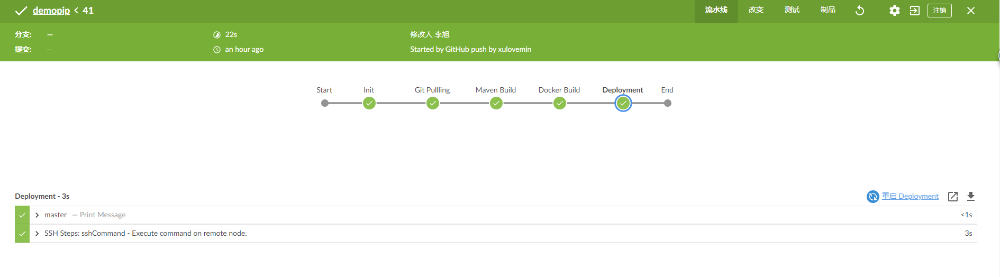</p>
<ul>
<li>用户权限配置（安装Role-based Authorization Strategy）这个插件</li>
</ul>
<p>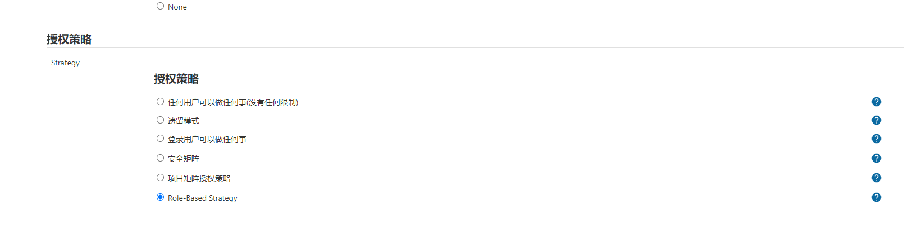<br>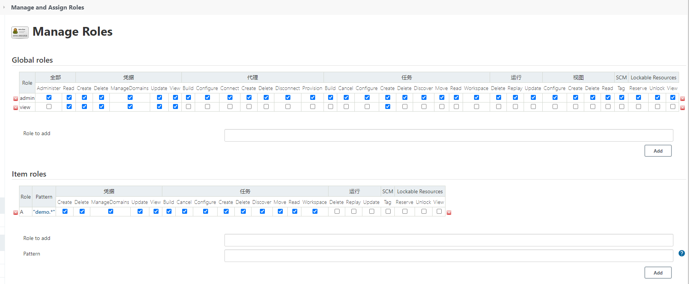<br>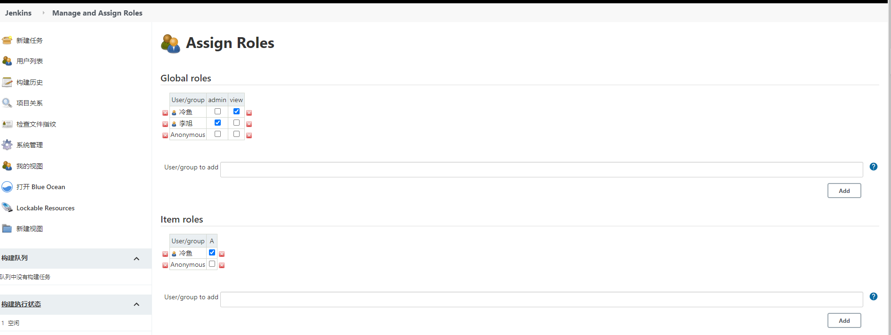</p>

            <div class="post-copyright">
    <!--<div class="content">
        <p>最后更新： 2021年03月19日 09:48</p>
        <p>原始链接： <a class="post-url" href="/2020/11/29/Jenkins使用/" title="Jenkins使用">https://xulovemin.github.io/2020/11/29/Jenkins使用/</a></p>
        <footer>
            <a href="https://xulovemin.github.io">
                
                
            </a>
        </footer>
    </div>-->
</div>

      
        
            

        
    </div>
    <footer class="article-footer">
        
        <ul class="article-footer-menu">
            
            
  <li class="article-footer-tags">
    <i class="fa fa-tags"></i>
      
    <a href="/tags/持续集成/" class="color5">持续集成</a>
      
    <a href="/tags/持续部署/" class="color5">持续部署</a>
      
  </li>

        </ul>
        
    </footer>
  </div>
</article>


    <aside class="post-toc-pos post-toc-top" id="post-toc">
        <nav class="post-toc-wrap">
            <ol class="post-toc"><li class="post-toc-item post-toc-level-3"><a class="post-toc-link" href="#Jenkins安装"><span class="post-toc-text">Jenkins安装</span></a></li><li class="post-toc-item post-toc-level-3"><a class="post-toc-link" href="#jenkins系统管理配置"><span class="post-toc-text">jenkins系统管理配置</span></a></li><li class="post-toc-item post-toc-level-3"><a class="post-toc-link" href="#jenkins全局工具配置"><span class="post-toc-text">jenkins全局工具配置</span></a></li><li class="post-toc-item post-toc-level-3"><a class="post-toc-link" href="#jenkins全局凭据管理"><span class="post-toc-text">jenkins全局凭据管理</span></a></li><li class="post-toc-item post-toc-level-3"><a class="post-toc-link" href="#新建jenkins任务"><span class="post-toc-text">新建jenkins任务</span></a></li><li class="post-toc-item post-toc-level-3"><a class="post-toc-link" href="#以piplines的方式构建任务"><span class="post-toc-text">以piplines的方式构建任务</span></a></li></ol>
        </nav>
    </aside>
    

<nav id="article-nav">
  
    <a href="/2020/11/29/K8s的总结/" id="article-nav-newer" class="article-nav-link-wrap">

      <span class="article-nav-title">
        <i class="fa fa-hand-o-left" aria-hidden="true"></i>
        
          K8s的总结
        
      </span>
    </a>
  
  
    <a href="/2019/12/26/Python实用工具/" id="article-nav-older" class="article-nav-link-wrap">
      <span class="article-nav-title">Python实用工具</span>
      <i class="fa fa-hand-o-right" aria-hidden="true"></i>
    </a>
  
</nav>


    
</section>
        
      </div>
      <footer id="footer">
  <div class="outer">
    <div id="footer-info" class="inner">
      

      <p>
        &copy; 记事本<br>
      </p>
    </div>
  </div>
</footer>
    <script async src="//busuanzi.ibruce.info/busuanzi/2.3/busuanzi.pure.mini.js"></script>
<script src="//cdn.bootcss.com/jquery/3.2.1/jquery.min.js"></script>
<script>
  var mihoConfig = {
      root: "https://xulovemin.github.io",
      animate: true,
      isHome: false,
      share: false,
      reward: 0
  }
</script>
<div class="sidebar">
    <div id="sidebar-search" title="Search">
        <i class="fa fa-search"></i>
    </div>
    <div id="sidebar-category" title="Categories">
        <i class="fa fa-book"></i>
    </div>
    <div id="sidebar-tag" title="Tags">
        <i class="fa fa-tags"></i>
    </div>
    <div id="sidebar-top">
        <span class="sidebar-top-icon"><i class="fa fa-angle-up"></i></span>
    </div>
</div>
<div class="sidebar-menu-box" id="sidebar-menu-box">
    <div class="sidebar-menu-box-container">
        <div id="sidebar-menu-box-categories">
            <a class="category-link" href="/categories/DevOps/">DevOps</a><a class="category-link" href="/categories/Linux操作/">Linux操作</a><a class="category-link" href="/categories/休闲贴/">休闲贴</a><a class="category-link" href="/categories/工具/">工具</a><a class="category-link" href="/categories/技术贴/">技术贴</a><a class="category-link" href="/categories/算法/">算法</a><a class="category-link" href="/categories/运维/">运维</a>
        </div>
        <div id="sidebar-menu-box-tags">
            <a href="/tags/Docker/" style="font-size: 10px;">Docker</a> <a href="/tags/K8s/" style="font-size: 10px;">K8s</a> <a href="/tags/Linux/" style="font-size: 13.33px;">Linux</a> <a href="/tags/docker/" style="font-size: 20px;">docker</a> <a href="/tags/docker编排/" style="font-size: 10px;">docker编排</a> <a href="/tags/elasticsearch/" style="font-size: 10px;">elasticsearch</a> <a href="/tags/flinOnYarn/" style="font-size: 10px;">flinOnYarn</a> <a href="/tags/hadoop集群/" style="font-size: 10px;">hadoop集群</a> <a href="/tags/mongo/" style="font-size: 13.33px;">mongo</a> <a href="/tags/nginx/" style="font-size: 10px;">nginx</a> <a href="/tags/redis/" style="font-size: 10px;">redis</a> <a href="/tags/swarm/" style="font-size: 10px;">swarm</a> <a href="/tags/分片/" style="font-size: 10px;">分片</a> <a href="/tags/反向代理/" style="font-size: 10px;">反向代理</a> <a href="/tags/可装逼/" style="font-size: 10px;">可装逼</a> <a href="/tags/安装/" style="font-size: 10px;">安装</a> <a href="/tags/密码应用/" style="font-size: 10px;">密码应用</a> <a href="/tags/工具/" style="font-size: 10px;">工具</a> <a href="/tags/持续部署/" style="font-size: 10px;">持续部署</a> <a href="/tags/持续集成/" style="font-size: 10px;">持续集成</a> <a href="/tags/插件/" style="font-size: 10px;">插件</a> <a href="/tags/日常/" style="font-size: 10px;">日常</a> <a href="/tags/爬虫相关/" style="font-size: 10px;">爬虫相关</a> <a href="/tags/电影网站/" style="font-size: 10px;">电影网站</a> <a href="/tags/负载均衡/" style="font-size: 10px;">负载均衡</a> <a href="/tags/辅助/" style="font-size: 10px;">辅助</a> <a href="/tags/部署/" style="font-size: 10px;">部署</a> <a href="/tags/集群/" style="font-size: 16.67px;">集群</a> <a href="/tags/集群搭建/" style="font-size: 10px;">集群搭建</a>
        </div>
    </div>
    <a href="javascript:;" class="sidebar-menu-box-close">&times;</a>
</div>
<div class="mobile-header-menu-nav" id="mobile-header-menu-nav">
    <div class="mobile-header-menu-container">
        <span class="title">Menus</span>
        <ul class="mobile-header-menu-navbar">
            
            <li>
                <a  href="/">
                    <i class="fa fa-home"></i><span>主页</span>
                </a>
            </li>
            
            <li>
                <a  href="/archives">
                    <i class="fa fa-archive"></i><span>归档</span>
                </a>
            </li>
            
            <li>
                <a  href="/about">
                    <i class="fa fa-user"></i><span>关于</span>
                </a>
            </li>
            
        </ul>
    </div>
    <div class="mobile-header-tag-container">
        <span class="title">Tags</span>
        <div id="mobile-header-container-tags">
            <a href="/tags/Docker/" style="font-size: 10px;">Docker</a> <a href="/tags/K8s/" style="font-size: 10px;">K8s</a> <a href="/tags/Linux/" style="font-size: 13.33px;">Linux</a> <a href="/tags/docker/" style="font-size: 20px;">docker</a> <a href="/tags/docker编排/" style="font-size: 10px;">docker编排</a> <a href="/tags/elasticsearch/" style="font-size: 10px;">elasticsearch</a> <a href="/tags/flinOnYarn/" style="font-size: 10px;">flinOnYarn</a> <a href="/tags/hadoop集群/" style="font-size: 10px;">hadoop集群</a> <a href="/tags/mongo/" style="font-size: 13.33px;">mongo</a> <a href="/tags/nginx/" style="font-size: 10px;">nginx</a> <a href="/tags/redis/" style="font-size: 10px;">redis</a> <a href="/tags/swarm/" style="font-size: 10px;">swarm</a> <a href="/tags/分片/" style="font-size: 10px;">分片</a> <a href="/tags/反向代理/" style="font-size: 10px;">反向代理</a> <a href="/tags/可装逼/" style="font-size: 10px;">可装逼</a> <a href="/tags/安装/" style="font-size: 10px;">安装</a> <a href="/tags/密码应用/" style="font-size: 10px;">密码应用</a> <a href="/tags/工具/" style="font-size: 10px;">工具</a> <a href="/tags/持续部署/" style="font-size: 10px;">持续部署</a> <a href="/tags/持续集成/" style="font-size: 10px;">持续集成</a> <a href="/tags/插件/" style="font-size: 10px;">插件</a> <a href="/tags/日常/" style="font-size: 10px;">日常</a> <a href="/tags/爬虫相关/" style="font-size: 10px;">爬虫相关</a> <a href="/tags/电影网站/" style="font-size: 10px;">电影网站</a> <a href="/tags/负载均衡/" style="font-size: 10px;">负载均衡</a> <a href="/tags/辅助/" style="font-size: 10px;">辅助</a> <a href="/tags/部署/" style="font-size: 10px;">部署</a> <a href="/tags/集群/" style="font-size: 16.67px;">集群</a> <a href="/tags/集群搭建/" style="font-size: 10px;">集群搭建</a>
        </div>
    </div>
</div>
<div class="search-wrap">
    <span class="search-close">&times;</span>
        <a href="javascript:;" class="header-icon waves-effect waves-circle waves-light" id="back">
            <i class="icon icon-lg icon-chevron-left"></i>
        </a>
        <input class="search-field" placeholder="关键字搜索..." id="keywords">
        <a id="search-submit" href="javascript:;">
            <i class="fa fa-search"></i>
        </a>
    <div class="search-container" id="search-container">
        <ul class="search-result" id="search-result">
        </ul>
    </div>
</div>

<div id="search-tpl">
    <li class="search-result-item">
        <a href="{url}" class="search-item-li">
            <span class="search-item-li-title" title="{title}">{title}</span>
        </a>
    </li>
</div>
<script src="/js/search.js"></script>
<script src="/js/main.js"></script>


  <script src="//cdn.bootcss.com/particles.js/2.0.0/particles.min.js"></script>
  <div id="particles"></div>
  <script src="/js/particles.js"></script>


  <link rel="stylesheet" href="//cdn.bootcss.com/animate.css/3.5.0/animate.min.css">
  <script src="//cdn.bootcss.com/scrollReveal.js/3.0.5/scrollreveal.js"></script>
  <script src="/js/animate.js"></script>


  <script src="/js/pop-img.js"></script>
  <script>
     $(".article-entry p img").popImg();
  </script>

  </div>
</body>
</html>